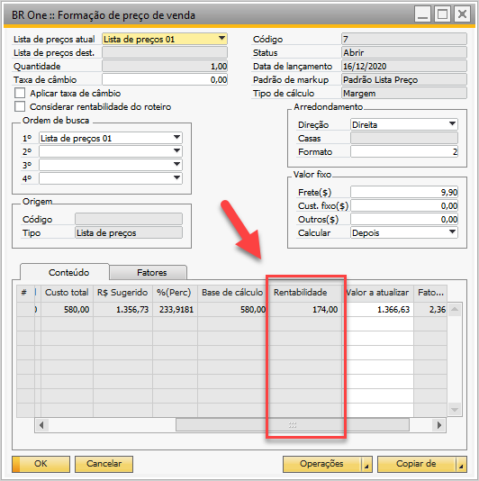

Detalhamento dos campos
Campo “Rentabilidade”
Exibi o valor (R$) da rentabilidade do produto, realizando o seguinte cálculo:
Quando o flag “Considerar rentabilidade do roteiro” estiver desmarcado é realizado o cálculo:
Rentabilidade = Coluna “CUSTO TOTAL” aba “Conteúdo” * (campo “Rentabilidade” aba “Fatores” /100)
Quando o flag “Considerar rentabilidade do roteiro” estiver marcado é realizado o cálculo:
Rentabilidade = Base de cálculo aba “Conteúdo” - CUSTO TOTAL aba “Conteúdo”
{kind=link}
Campo “Total de impostos”.
Mostra a somatória dos impostos (ICMS, PIS, COFINS e ISS)
Campo “Aliq. I.R.:”
Campo para informar manualmente o valor do I.R.
Campo “Aliq. C.S.L.L.”
Campo para informar manualmente o valor do C.S.L.L.
Campo “Total I.R. e C.S.L.L.”
Mostra a somatória dos impostos (I.R e C.S.L.L.)
Campo “Calcular I.R e C.S.L.L”
Campo com as duas opções de tipo de cálculo:
Base de Cálculo
Rentabilidade
{kind=link}
Fórmulas de acordo com o parâmetro “Calcular I.R e C.S.L.L” sendo considerados os valores fixos.
Base de cálculo Makup: Mantém o cálculo com todos os impostos e despesas.
Calcular Antes
Base de cálculo + “Valor Fixo” (Base de cálculo * (Soma Alíquotas / 100))
Calcular Depois
Base de cálculo + (Base de cálculo * (Soma Alíquotas / 100)) + “Valor Fixo”
Base de cálculo Margem: Mantém o cálculo com todos os impostos e despesas.
Calcular Antes
((Base de cálculo + “Valor Fixo”) / (1 – (Soma Alíquotas / 100)))
Calcular Depois
Base de cálculo / (1 – (Soma Alíquotas / 100)) + “Valor Fixo”
Rentabilidade: Retira o I.R. e o C.S.L.L. dos cálculos primários, e aplica sobre a rentabilidade encontrada produto.
Rentabilidade Markup
Calcular Antes
(Base de cálculo + “Valor Fixo”) + (Base de cálculo * (((Soma Alíquotas - IR - CSLL - Rentabilidade ) ) / 100)) + Base de cálculo + (Base de cálculo * (((Soma Alíquotas - IR - CSLL - Rentabilidade ) ) / 100)) * (Rentabilidade/100) + (Base de cálculo + (Base de cálculo * (((Soma Alíquotas - IR - CSLL - Rentabilidade ) ) / 100)) * (Rentabilidade/100))* ((IR+CSLL) / 100)))
Calcular Depois
Base de cálculo + (Base de cálculo * (((Soma Alíquotas - IR - CSLL - Rentabilidade ) ) / 100)) + Base de cálculo + (Base de cálculo * (((Soma Alíquotas - IR - CSLL - Rentabilidade ) ) / 100)) * (Rentabilidade/100) + (Base de cálculo + (Base de cálculo * (((Soma Alíquotas - IR - CSLL - Rentabilidade ) ) / 100)) * (Rentabilidade/100))* ((IR+CSLL) / 100))) + “Valor Fixo”
Rentabilidade Margem
Calcular Antes
(Base De Cálculo + “Valor Fixo”) /(1- ((Soma Alíquotas - IR - CSLL - Rentabilidade)/ 100)) + (Base De Cálculo /(1- ((Soma Alíquotas - IR - CSLL - Rentabilidade)/ 100)) * (Rentabilidade / 100)) + ((Base De Cálculo /(1- ((Soma Alíquotas - IR - CSLL - Rentabilidade)/ 100)) * (Rentabilidade / 100))) * ((IR+CSLL) / 100)))
Calcular Depois
(Base De Cálculo /(1- ((Soma Alíquotas - IR - CSLL - Rentabilidade)/ 100)) + (Base De Cálculo /(1- ((Soma Alíquotas - IR - CSLL - Rentabilidade)/ 100))* (Rentabilidade / 100)) + ((Base De Cálculo /(1- ((Soma Alíquotas - IR - CSLL - Rentabilidade)/ 100)) * (Rentabilidade / 100))) * ((IR+CSLL) / 100))) + “Valor Fixo”